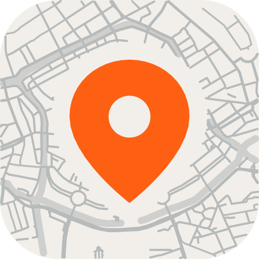

v1 put every link in one bar but did not say how they relate, so the logo going to the front page looked like an exception.
v2 starts from the site's structure. The front page is the root, and the logo is its link: the first item in the bar, underlined when
you are there, and the first step of the path under the bar on every other page. Below the root there are two kinds of place:
the site (pages about Cartopolis, from the CMS) on the left of the bar, and the app (things you do) on the right.
Everything deeper than that is on the second line, which always starts at the logo.
1 · The structure every page of cartopolis.org has one place in it

Home/nl/ · the logo
The site · left of the bar · CMS pages
Over/nl/over
Je eigen server/nl/server
next page"in menu" in the CMS
The app · right of the bar
Community/chat
Oosterpoort
# straatfeest
Thread
Wereld/world
a place
Beheer/admin · admins only
Mensen · Content · Data
Pagina's
Top row → the bar, one item eachEverything below it → the second line, the path from HomeHome → the logo, never a word in the menu
2 · The bar, read as the structure
cartopolisNLENJ
Home›…
Homethe root: the logo, underlined in orange when you are on the front page
The site newthe CMS pages marked "in menu", in their order
(space)the gap is the boundary: reading about Cartopolis on the left, using it on the right
The appCommunity, Wereld, and Beheer in gold for an admin
Youlanguage, then the account (theme and Sign out in its menu); signed out, "Inloggen"
The second line is the path from Home to where you are. Every page has one except Home itself, so clicking the
logo is always the same as clicking the first step of the path.
3 · Every place, one bar
Home, signed out: /nl/. The logo is underlined because it is the page you are on. There is no second line, since you are at the root.
cartopolisNLENInloggen
Praten en samenwerken, op de kaart van je eigen stad
Cartopolis is een vrij alternatief voor gemeenschappen…
A site page, signed in: /nl/over.
cartopolisNLENJ
Home›Over
Over Cartopolis
Community, in a thread: /chat. The path runs from Home through Community, so the app is visibly part of the same site. Today the path starts at "Community".
cartopolisNLENJ
Home›Community›Oosterpoort›# straatfeest›Thread
# algemeen
# straatfeest
# buurtmoestuin
Anna: Zaterdag om 14:00 bij het pleintje? Bas: Ik neem de partytent mee.
Wereld: /world.
cartopolisNLENJ
Home›Wereld›Oosterpoort
Beheer: /admin, where the CMS pages are managed. The pages it lists are the ones in the bar's left half.
cartopolisNLENJ
Home›Beheer›Content›Pagina's
Pagina's
Bibliotheek
Fediverse
Home · Over · Je eigen server
4 · On a phone the same structure, folded
›Oosterpoort›# straatfeest
The logo (Home) and the two app places you use every day stay in the bar. The path keeps only its last steps, still starting at the logo.
The site
Home
Over
Je eigen server
The app
Community
Wereld
Beheer
Taal: NL · EN
Jeroen · thema · uitloggen
The menu is the structure from (1) written out: the site, then the app, then you. Home is a word here, because a phone menu has room for it.
5 · Where the site's half comes from new
A CMS page chooses whether it is in the menu, and where. That is a column in Beheer › Content › Pagina's and a field that MCP's
put_page takes. The label is a short $t('nav') text, so it can be translated like any other text. home is
the logo and is never one of the words.